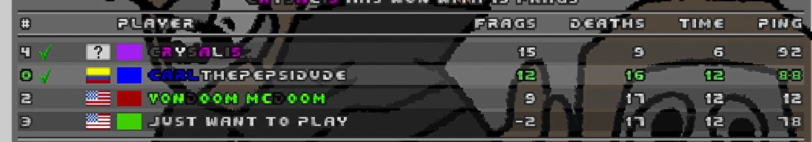
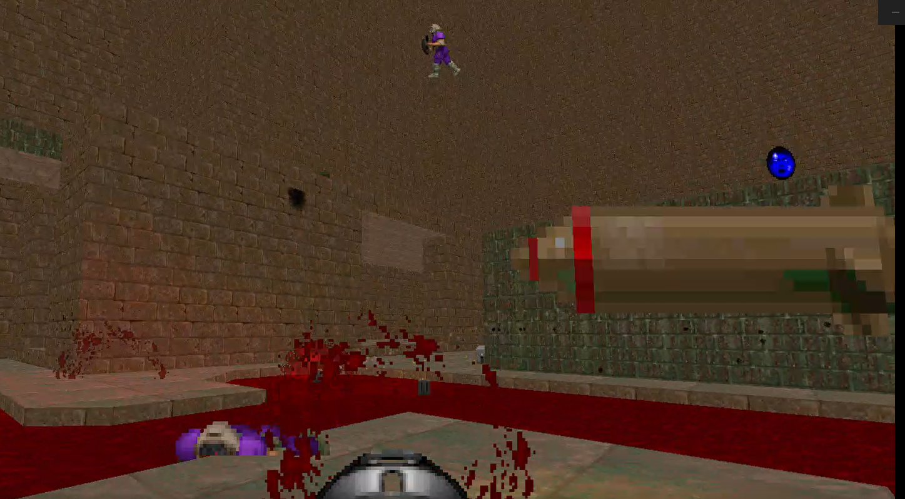

Triyng out TSPG servers for Doomfoolery hosting
March 12, 2026
2 Days ago i was able to learn how to make servers at
The Sentinel's Playground, it's pretty easy, so i set up
a server configuration and decided to host some matches.
today i was able to host, and some people came to play,
here are the first fellas who decided to try this mod in
its early state.

Sorry for the poor quality, i was only able to take these cool screenshots by recording a bit of the matches.

What do you think of rocket jumping in doom matches?...

right now i dont think i should try a 24/7 server... atleast for now, but just in case, i'll leave the name of the server right here.
[TSPG-PK] Deathmatch: Doomfoolery Server Testing
i'll post in here in case i decide to set up a 24/7 server.